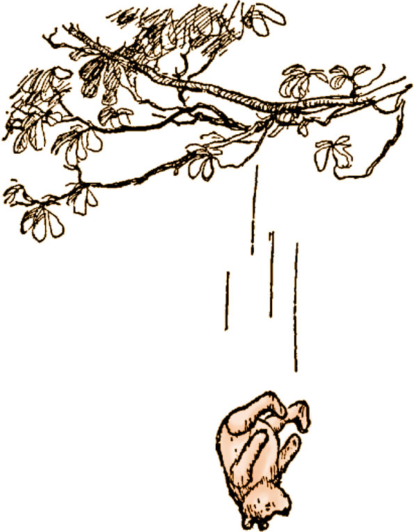

Once upon a time, a very long time ago now, about last Friday, Winnie-the-Pooh lived in a forest all by himself under the name of Sanders.
("What does 'under the name' mean?" asked Christopher Robin.
"It means he had the name over the door in gold letters, and lived under it."
"Winnie-the-Pooh wasn't quite sure," said Christopher Robin.
"Now I am," said a growly voice.
"Then I will go on," said I.)
One day when he was out walking, he came to an open place in the middle of the forest, and in the middle of this place was a large oak-tree, and, from the top of the tree, there came a loud buzzing-noise.
Winnie-the-Pooh sat down at the foot of the tree, put his head between his paws and began to think.
First of all he said to himself: "That buzzing-noise means something. You don't get a buzzing-noise like that, just buzzing and buzzing, without its meaning something. If there's a buzzing-noise, somebody's making a buzzing-noise, and the only reason for making a buzzing-noise that I know of is because you're a bee.
Then he thought another long time, and said:
"And the only reason for being a bee that I know of is making honey."
And then he got up, and said: "And the only reason for making honey is so as I can eat it." So he began to climb the tree.
He climbed and he climbed and he climbed, and as he climbed he sang a little song to himself. It went like this:
Isn't it funny
How a bear likes honey?
Buzz! Buzz! Buzz!
I wonder why he does?
Then he climbed a little further ... and a little further ... and then just a little further. By that time he had thought of another song. It's a very funny thought that, if Bears were Bees, They'd build their nests at the bottom of trees. And that being so (if the Bees were Bears), We shouldn't have to climb up all these stairs.
He was getting rather tired by this time, so that is why he sang a Complaining Song. He was nearly there now, and if he just stood on that branch ...
Crack!
"Oh, help!" said Pooh, as he dropped ten feet on the branch below him.
"If only I hadn't——" he said, as he bounced twenty feet on to the next branch.
"You see, what I meant to do," he explained, as he turned head-over-heels, and crashed on to another branch thirty feet below, "what I meant to do——"
"Of course, it was rather——" he admitted, as he slithered very quickly through the next six branches.
"It all comes, I suppose," he decided, as he said good-bye to the last branch, spun round three times, and flew gracefully into a gorse-bush, "it all comes of liking honey so much. Oh, help!"
